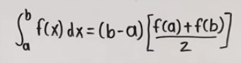
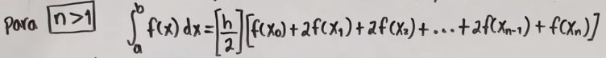

UNIVERSIDAD AUTONOMA DE CHIAPAS
FACULTAD DE CONTADURIA Y ADMINISTRACION CAMPUS 1
LIDTS
ALUMNO: JOSE FRANCISCO PENA MORALES
PROYECTO: REGLA DEL TRAPECIO EXPLICADO CON
UNA PAGINA WEB
3ER SEMESTRE GRUPO: P
11-NOV-23
TUXTLA GUTIERREZ, CHIAPAS.
La regla del trapecio es un método utilizado en cálculo
y análisis numérico para aproximar la integral definida
de una función. Se basa en dividir el área bajo la curva
de la función en pequeños trapecios y sumar sus áreas
para obtener una aproximación de la integral.
La regla del trapecio sirve para aproximar el área bajo una
curva al dividirla en trapecios y sumar sus áreas.
Es especialmente útil cuando no es posible o práctico calcular
la integral de manera exacta.
La regla del trapecio se utiliza en física, economía y finanzas,
ingeniería, ciencias de la computación, análisis de datos y matemáticas aplicadas.
En este ejemplo vamos a calcular la integral de
f(x) = ex^2 desde 0 hasta 5. para hacerlo primero
obtenemos lo que se conoce como Dx o tambien
representada como h, para obtener Dx debemos de
conocer los limites de nuestro problema, en este
caso son (0,1) y tambien necesitamos conocer
nuestra n, la cual representa las partes a la
que sera dividido nuestra funcion en base a los
limites, en este caso n=5, ahora para conocer Dx,
la formula es Dx=(b-a)/n, donde b es el límite
superior y a es el límite inferior, por lo tanto
Dx=(1-0)/5=0.2, conociendo Dx ahora hacemos las
respectivas iteraciones en base a n lo cual como
se ve en la plantilla de excel nos quedan 6
iteraciones de 0 hasta 5 y a cada uno le obtuvimos
xi su formula es: (a + i) * Dx, como empezamos en la
iteracion 0, hacemos la sustitucion: (0 + 0) * 0.2 = 0,
hacemos esto en cada iteracion hasta cumplir con la
ultima, luego lo que hacemos es sustituir las xi obtenidas
en nuestra f(x)=ex^2 lo cual sustituido quedaria:
f(0)=e(0^2)=1, hacemos esto con todas nuestras xi,
despues usamos k la cual es una constante que se
menciona en la formula ya que en esta nos dice que
a partir de x1 es decir la iteracion uno hasta la
iteracion cuatro se multiplicaran por dos estas xi,
para la x inicial osea x0 y la x final osea x5 o xn,
se multiplicaran por uno y asi obtendremos las areas
de cada n, ya al final para obtener el area total sumamos
cada area que obtuvimos al multiplicar por k ya en ultimo
paso tomamos el area total, lo multiplicamos por Dx y
dividimos entre 2 lo cual seria: (At * Dx) / 2 o como
se ve en el excel: (14.8065 * 0.2)/ 2 = 1.4806, y de
esta forma es como se aplica la regla del trapecio.
 
-Simplicidad: Es fácil de entender e implementar.
-Implementación eficiente: Puede proporcionar resultados
aceptables con un número relativamente pequeño de subintervalos.
-Aproximación razonable: Ofrece buenas estimaciones en ciertos casos,
especialmente cuando la función es relativamente suave.
La regla del trapecio es una herramienta valiosa en el campo del cálculo
numérico. Aunque puede no ser la técnica más precisa en todos los casos,
su simplicidad y eficiencia la hacen útil en situaciones donde otras métodos
son difíciles de aplicar. Es especialmente útil cuando se necesita una
aproximación rápida y aceptable del área bajo una curva.